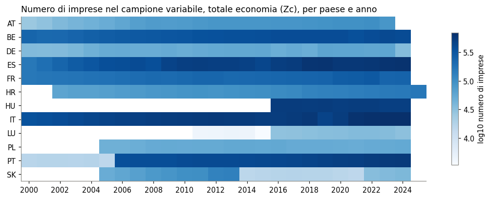
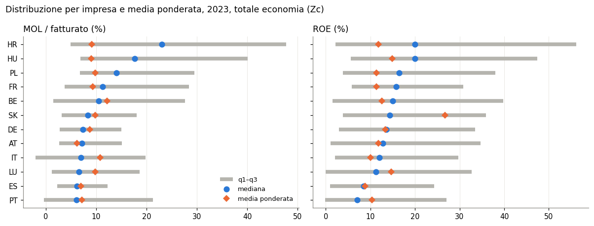
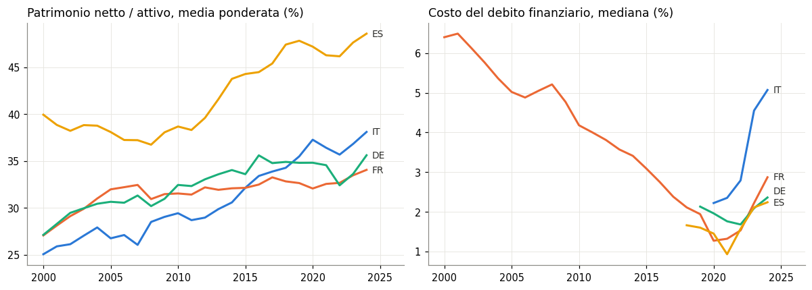
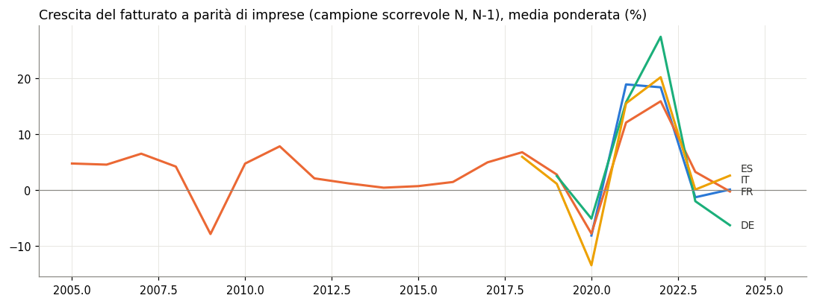
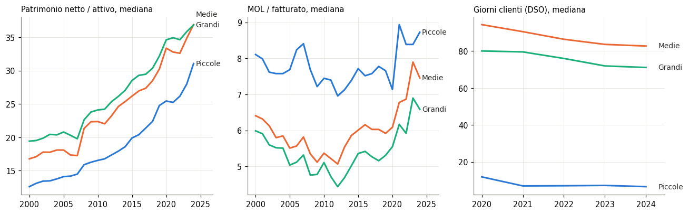
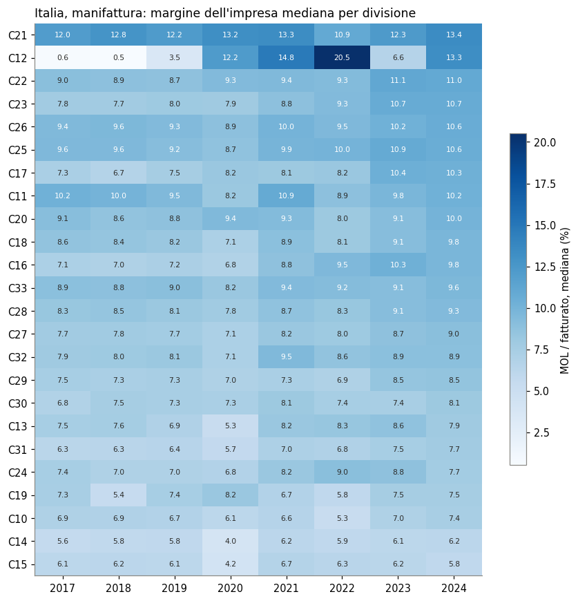

Rilascio BACH 20260914 (data di estrazione dichiarata dal file). Righe caricate: 349.335; colonne: 183; variabili del codebook: 110.
BACH — analisi esplorativa dei bilanci aggregati delle imprese europee
Imprese
Bilanci
BACH
Europa
Che cosa contiene BACH, la base dati dei bilanci aggregati delle società non finanziarie europee: paesi, settori, classi dimensionali, medie ponderate e quartili.
Paolo Volterra ![]()
Fonte: BACH, Bank for the Accounts of Companies Harmonized, base dati dell’European Committee of Central Balance-Sheet Data Offices (ECCBSO), ospitata dalla Banque de France. Il notebook legge il database completo direttamente dal sito a ogni esecuzione (nessuna copia locale) e il codebook dal capitolo 1.1 della guida ufficiale.
Che cosa contiene BACH. Dati di bilancio aggregati (non dati di singole imprese) delle società non finanziarie di 12 paesi europei, per anno, settore NACE, classe dimensionale e tipo di campione. Per ogni voce o indice sono pubblicate la media ponderata (wm, rapporto fra somme: pesano le imprese grandi) e i quartili q1, q2 (mediana), q3 della distribuzione per impresa (ogni impresa pesa uguale). Le voci di conto economico sono in % del fatturato, quelle di stato patrimoniale in % del totale di bilancio, gli indici in %.
Avvertenze della guida utente (2026).
Un valore mancante indica che la soglia di riservatezza non è raggiunta; zero vuol dire zero.
Italia, Belgio e Portogallo hanno rilevazioni esaustive: le serie del campione «variabile» sono confrontabili nel tempo. Per gli altri paesi la guida raccomanda i campioni «scorrevoli» (stesse imprese in due anni consecutivi) per le variazioni.
Fra paesi restano differenze di principi contabili e di copertura (capitolo 1.2 «Deviations» e capitolo 2 della guida).
La redistribuzione dei dati è vietata; la citazione della fonte è obbligatoria (testo completo in fondo).
1. Il codebook
Le 110 variabili si dividono in blocchi: voci di conto economico (I…), attivo (A…), passivo e patrimonio netto (E…, L…), note (N…) e indici (r…). Per gli indici la guida indica numeratore e denominatore in termini delle voci elementari.
| blocco | variabili |
|---|---|
| Attivo (% totale bilancio) | 17 |
| Conto economico (% fatturato) | 23 |
| Indice: Activity and Technical Ratios | 2 |
| Indice: Financial Structure Ratios | 10 |
| Indice: Financial and Debt Service Ratios | 10 |
| Indice: Profitability Ratios | 13 |
| Indice: Working Capital Ratios | 6 |
| Note (% totale bilancio) | 3 |
| Passivo (% totale bilancio) | 26 |
In parole semplici: la tabella conta quante grandezze BACH pubblica per ciascun blocco del bilancio; gli indici sono già calcolati dalla fonte, non vanno ricostruiti dalle voci.
| code | label | numeratore | denominatore |
|---|---|---|---|
| r11 | Assets to Equity ratio | A | E |
| r17 | Current ratio (strict sense definition) | (A2+A3+A41+A511+A6+A7) | (L11+L21+L311+L321+L4+L5+L612) |
| r22 | EBITDA over Interest on financial debt | (I1+I2+I3+I41+I42-I5-I6-I7-I81-I83) | I10 |
| r28 | Credit institutions net indebtness ratio | (L2 - A7) | A |
| r29 | Financing cost (estricted sense definition) | I10 | (L1+L2+L31) |
| r32 | Gross operating profit / Net turnover (ROS) | (I1+I2+I3+I41-I5-I6-I7-I81) | I1 |
| r38 | Return on equity | It3 | E |
| r311 | EBITDA - Return on investments | (I1+I2+I3+I41+I42-I5-I6-I7-I81-I83) | A |
| r313 | Net Turnover annual growth rate | I1(N)-I1(N-1) | I1(N-1) |
| r42 | Coefficient Employee expenses over Gross value added | I7 | (I1+I2+I3+I41-I5-I6-I81) |
| r55 | Days Sales Outstanding | 360*(A3-L5) | I1 |
| r56 | Days Payables Outstanding | 360*(L4-A21) | (I5+I6) |
In parole semplici: questi sono gli indici usati nel resto del notebook, con la formula ufficiale. Per esempio r32 è il margine operativo lordo diviso il fatturato, r29 gli interessi diviso i debiti finanziari.
2. Struttura e copertura del dato
Ogni riga è una cella paese × anno × settore × classe dimensionale × campione. Prima di qualsiasi confronto conviene vedere quali paesi e anni sono presenti e quanto pesa la riservatezza (valori mancanti).
| country | righe | anno_min | anno_max | settori |
|---|---|---|---|---|
| AT | 33698 | 1999 | 2023 | 103 |
| BE | 35473 | 1999 | 2024 | 103 |
| DE | 26544 | 1999 | 2024 | 76 |
| ES | 37011 | 1999 | 2024 | 104 |
| FR | 36770 | 1999 | 2024 | 104 |
| HR | 30213 | 2002 | 2025 | 104 |
| HU | 12141 | 2016 | 2024 | 103 |
| IT | 33717 | 1999 | 2024 | 93 |
| LU | 17757 | 2010 | 2024 | 98 |
| PL | 27981 | 2005 | 2024 | 104 |
| PT | 34701 | 1999 | 2024 | 102 |
| SK | 23329 | 2005 | 2024 | 104 |
In parole semplici: 12 paesi; la serie più lunga parte dal 1999, l’ultimo anno disponibile varia da paese a paese (dal 2023 al 2025), quindi i confronti fra paesi vanno fatti su un anno comune.

In parole semplici: più scuro = più imprese nel campione. Per l’Italia il campione passa da 349.133 imprese (2000) a 685.423 (2024): cambiamenti così grandi riflettono anche l’ampliamento della rilevazione, non solo la demografia d’impresa.
| country | year | nb_firms | employees | coverage_firms | coverage_turnover | coverage_employees |
|---|---|---|---|---|---|---|
| AT | 2023 | 84194 | 2835201 | 37.4 | nan | nan |
| BE | 2024 | 390839 | 1986941 | 82.3 | nan | 91.7 |
| DE | 2024 | 34954 | 3.6 | 48.9 | nan | |
| ES | 2024 | 648665 | 7587892 | 49.1 | nan | 67.9 |
| FR | 2024 | 243287 | 11703393 | nan | nan | nan |
| HR | 2025 | 159928 | 1100429 | 100.0 | 100.0 | 100.0 |
| HU | 2024 | 504740 | 2714876 | 100.0 | 100.0 | 100.0 |
| IT | 2024 | 685423 | 10436753 | 100.0 | 100.0 | 100.0 |
| LU | 2024 | 31201 | 93.9 | 77.3 | nan | |
| PL | 2024 | 54599 | 5762370 | nan | nan | nan |
| PT | 2024 | 560345 | 3684795 | 100.0 | 100.0 | 100.0 |
| SK | 2024 | 38605 | 331458 | 13.7 | 35.6 | 26.8 |
In parole semplici: per l’ultimo anno di ogni paese, quante imprese e addetti coprono i dati e quale quota della popolazione di società non finanziarie rappresentano (tassi di copertura in %, dove il paese li comunica). Una copertura del fatturato alta con una copertura delle imprese bassa indica un campione sbilanciato verso le imprese grandi.
| country | % mancanti |
|---|---|
| HR | 1.4 |
| FR | 2.9 |
| HU | 4.4 |
| BE | 6.7 |
| LU | 13.2 |
| SK | 15.3 |
| ES | 17.8 |
| IT | 18.8 |
| PT | 18.9 |
| PL | 19.3 |
| DE | 21.3 |
| AT | 26.5 |
In parole semplici: quota media di medie ponderate assenti sul totale economia: misura voci non rilevate dal paese (deviazioni nazionali) più che la riservatezza, che a questo livello di aggregazione scatta di rado.
3. Controllo di quadratura
Le voci dell’attivo (A1-A7) devono sommare al 100% del totale di bilancio, e così patrimonio netto più passività (E + Lp + L1…L6). Sulle medie ponderate la somma deve tornare a 100 a meno degli arrotondamenti; scostamenti grandi segnalano voci mancanti per un paese.
| country | anni | scarto_att_max | scarto_pas_max |
|---|---|---|---|
| AT | 24 | 0.02 | 0.01 |
| BE | 25 | 0.01 | 0.02 |
| DE | 25 | 0.02 | 0.02 |
| ES | 25 | 0.02 | 0.01 |
| FR | 25 | 0.01 | 0.02 |
| HR | 24 | 0.01 | 0.02 |
| HU | 9 | 0.00 | 0.02 |
| IT | 25 | 0.01 | 0.02 |
| LU | 14 | 0.02 | 0.01 |
| PL | 20 | 0.01 | 0.02 |
| PT | 25 | 0.02 | 0.02 |
| SK | 20 | 0.37 | 0.26 |
In parole semplici: per 12 paesi su 12 attivo e passivo tornano a 100 entro mezzo punto in tutti gli anni: le medie ponderate delle voci di bilancio sono coerenti fra loro.
4. Confronto fra paesi in un anno comune
Totale economia senza holding e sedi centrali (Zc), tutte le classi dimensionali, campione variabile, ultimo anno disponibile per tutti i 12 paesi. Per ogni indice: media ponderata (dominata dalle imprese grandi) e mediana (impresa tipica).
| country | MOL / fatturato wm | MOL / fatturato q2 | ROE wm | ROE q2 | Patrimonio netto / attivo wm | EBITDA / interessi wm | EBITDA / interessi q2 | Costo del debito finanziario wm | Costo del debito finanziario q2 | Giorni clienti (DSO) wm | Giorni clienti (DSO) q2 |
|---|---|---|---|---|---|---|---|---|---|---|---|
| AT | 9.3 | 11.3 | 11.8 | 12.8 | 37.3 | 756.3 | 645.4 | nan | nan | nan | nan |
| BE | 9.2 | 23.1 | 12.6 | 15.0 | 43.6 | 832.7 | 1418.8 | 4.6 | 4.5 | 50.4 | 4303.7 |
| DE | 6.2 | 7.1 | 13.3 | 13.6 | 33.6 | 764.3 | 890.5 | 3.0 | 2.1 | 8.0 | 16.7 |
| ES | 9.8 | 6.6 | 8.8 | 8.5 | 47.6 | 905.8 | 1056.1 | 3.7 | 2.1 | 51.4 | 18.7 |
| FR | 7.0 | 6.2 | 11.3 | 15.8 | 33.5 | 686.0 | 1877.9 | 3.9 | 2.2 | 47.5 | 43.4 |
| HR | 12.2 | 10.6 | 11.8 | 20.0 | 37.5 | 1231.4 | 3697.2 | 3.9 | 0.1 | 34.3 | 22.7 |
| HU | 9.1 | 17.7 | 14.9 | 20.0 | 44.3 | 838.0 | 1566.7 | 10.7 | 0.0 | 46.5 | 19.3 |
| IT | 9.8 | 8.3 | 10.0 | 12.1 | 36.8 | 785.9 | 825.0 | 4.7 | 4.6 | 76.0 | 12.0 |
| LU | 7.2 | 6.1 | 14.7 | 11.3 | 35.5 | 706.4 | 1291.4 | 1.9 | 0.8 | 11.0 | 16.7 |
| PL | 8.8 | 7.4 | 11.3 | 16.4 | 47.7 | 966.9 | 1370.0 | 7.4 | 7.6 | 35.4 | 33.0 |
| PT | 10.8 | 7.0 | 10.3 | 7.0 | 42.8 | 760.5 | 788.5 | 4.6 | 3.0 | 52.5 | 15.9 |
| SK | 9.8 | 14.0 | 26.7 | 14.4 | 37.7 | 17784.6 | 1372.5 | 3472.3 | 4.3 | 47.0 | 37.7 |
In parole semplici: fotografia 2023 dei principali indici di bilancio. Dove la media ponderata supera di molto la mediana, i risultati del paese sono trainati dalle imprese più grandi; dove è il contrario, le grandi fanno peggio dell’impresa tipica.

In parole semplici: la barra grigia va dal primo al terzo quartile delle imprese, il punto blu è l’impresa mediana, il rombo arancio la media ponderata. Lo scarto media-mediana del margine è più ampio in PT (+3.8 punti) e più piccolo in BE (-13.9).
5. Serie storiche: Italia e grandi paesi dell’area euro
Patrimonio netto in % dell’attivo e costo del debito finanziario, totale economia, campione variabile. Per Germania, Francia e Spagna il campione variabile cambia composizione da un anno all’altro (avvertenza della guida): le serie mostrano i livelli, le variazioni vanno lette con prudenza.

In parole semplici: a sinistra la patrimonializzazione, a destra quanto costa in media il debito. Per l’Italia il patrimonio netto passa dal 25.0% dell’attivo (2000) al 38.1% (2024). Il costo mediano del debito italiano è 5.1% nell’ultimo anno (2024), contro il 2.2% del 2020, primo anno in cui l’indice è pubblicato per l’Italia; la Francia, con la serie più lunga, è al 2.9%.

In parole semplici: la crescita del fatturato calcolata sulle stesse imprese nei due anni, quindi senza l’effetto delle entrate e uscite dal campione. Il calo più forte per l’Italia è nel 2020 (-8.1%), il rimbalzo più alto nel 2021 (18.9%).
6. Italia per classe dimensionale
Piccole (< 10 mln di fatturato), medie (10-50 mln) e grandi (≥ 50 mln); totale economia, campione variabile.

In parole semplici: nel 2024 l’impresa mediana piccola ha un patrimonio netto pari al 31.1% dell’attivo, la media 36.9%, la grande 36.9%; i giorni di incasso dai clienti sono 7, 83 e 71; il valore delle piccole risente della discontinuità sui crediti commerciali descritta nella sezione 8.
7. Manifattura italiana per divisione NACE
Margine operativo lordo su fatturato (mediana) per divisione della manifattura (C10-C33), ultimi otto anni, tutte le classi dimensionali, campione variabile.

In parole semplici: ogni riga è un comparto manifatturiero, ordinate dal margine più alto al più basso nel 2024: in testa C21 (13.4%), in coda C15 (5.8%). Il codice di divisione si legge con la tabella NACE della guida (es. C21 farmaceutica, C19 raffinazione).
8. Anomalie da conoscere prima di usare i dati
L’esplorazione ha messo in luce due discontinuità che non dipendono dall’andamento economico. Le celle seguenti le misurano direttamente sul dato; le spiegazioni proposte sono ipotesi da verificare con i produttori.
Belgio, giorni clienti (r55). L’indice è definito come 360 × (crediti commerciali − anticipi) / fatturato. Con crediti commerciali intorno al 12-13% del fatturato (r52), il valore atteso è dell’ordine di 40-50 giorni; i quartili pubblicati per il Belgio sono circa cento volte più alti, compatibili con un calcolo che usa il rapporto già espresso in percentuale. Nella guida la nota nazionale belga ricorda che le piccole imprese usano lo schema abbreviato e le micro lo schema micro.
Italia, crediti commerciali delle piccole imprese (A3, r52). Fra il 2015 e il 2016 la quota mediana dei crediti commerciali sull’attivo delle imprese con meno di 10 milioni di fatturato crolla, mentre sale quella degli altri crediti (A4); per le imprese grandi non succede. La guida dichiara per l’Italia «No break in time series». Lo spostamento è compatibile con una diversa classificazione dei crediti negli schemi di bilancio abbreviati delle società più piccole dal 2016; resta un’ipotesi. Fino a verifica, gli indici sui crediti commerciali delle piccole imprese italiane (A3, r52, r55) non sono confrontabili prima e dopo il 2016.
| year | r52_q2 | r55_q2 | r55_wm | r55_q2 / (3,6 × r52_q2) |
|---|---|---|---|---|
| 2015 | 12.31 | 4227.08 | 5201.12 | 95.38 |
| 2016 | 12.70 | 4360.85 | 5659.53 | 95.38 |
| 2017 | 12.93 | 4441.88 | 5416.90 | 95.43 |
| 2018 | 12.65 | 4340.68 | 5449.43 | 95.32 |
| 2019 | 12.28 | 4212.74 | 5375.74 | 95.29 |
| 2020 | 12.35 | 4203.51 | 5395.58 | 94.55 |
| 2021 | 13.90 | 46.95 | 5751.25 | 0.94 |
| 2022 | 12.80 | 4338.22 | 52.79 | 94.15 |
| 2023 | 12.66 | 4303.66 | 50.38 | 94.43 |
| 2024 | 11.54 | 3943.01 | 49.91 | 94.91 |
In parole semplici: l’ultima colonna confronta il DSO mediano pubblicato con 360 × crediti/fatturato: sulla scala attesa starebbe vicino a 1. Per il Belgio sta fra 94 e 95, cioè il DSO pubblicato è circa cento volte quello atteso; negli anni in cui scende vicino a 1 la scala torna quella attesa, quindi cambia anche da un anno all’altro (e fra media ponderata e quartili).
| year | A3_q2 piccole | A3_q2 grandi | A4_q2 piccole | A4_q2 grandi | r52_q2 piccole | r52_q2 grandi |
|---|---|---|---|---|---|---|
| 2012 | 22.76 | 34.29 | 5.02 | 4.76 | 24.95 | 25.64 |
| 2013 | 22.48 | 33.17 | 5.05 | 4.57 | 25.00 | 24.63 |
| 2014 | 18.26 | 32.30 | 6.12 | 4.64 | 21.08 | 24.16 |
| 2015 | 18.40 | 31.16 | 6.26 | 4.73 | 20.41 | 23.38 |
| 2016 | 6.87 | 30.72 | 9.55 | 4.97 | 8.65 | 23.77 |
| 2017 | 4.75 | 30.63 | 10.55 | 5.14 | 5.91 | 23.48 |
| 2018 | 3.98 | 29.36 | 11.02 | 4.99 | 4.92 | 22.72 |
| 2019 | 4.22 | 28.37 | 10.49 | 5.02 | 4.73 | 22.20 |
| 2020 | 2.98 | 25.59 | 10.81 | 4.59 | 4.49 | 23.09 |
In parole semplici: per le piccole imprese italiane la mediana dei crediti commerciali passa dal 18.4% dell’attivo nel 2015 al 6.9% nel 2016, mentre quella degli altri crediti sale dal 6.3% al 9.6%; per le grandi le due voci restano stabili. Un salto così netto in un solo anno, limitato alle piccole, è compatibile con un cambiamento di classificazione più che con un cambiamento dei comportamenti d’impresa.
9. Che cosa resta da fare
Confrontare la copertura BACH-Italia con le fonti già usate nel workspace sui bilanci aggregati: Mediobanca (Dati cumulativi, Medie imprese) e le tavole Banca d’Italia/Cerved A2.9 (BACH-Italia proviene dalla stessa Centrale dei Bilanci - Cerved).
Confrontare il numero di imprese BACH con le statistiche strutturali sulle imprese (Eurostat
sbs_ovw_act, ISTAT161_267) per misurare la copertura per settore; attenzione: le statistiche strutturali includono le imprese individuali, BACH solo le società.Usare i quartili BACH come benchmark settoriale europeo per i generatori di bilanci sintetici e per il credit scoring.
Ripetere le serie per gli altri paesi sul campione scorrevole, come raccomanda la guida.
Fonte dei dati (citazione richiesta dalle condizioni d’uso):
BACH database: ECCBSO, Oesterreichische Nationalbank, National Bank of Belgium, Deutsche Bundesbank, Banco de España, Banque de France, Hrvatska Narodna Banka, Magyar Nemzeti Bank, Centrale dei Bilanci - Cerved srl / Banca d’Italia, Statec Luxembourg, Narodowy Bank Polski (calculations of Narodowy Bank Polski on the basis of the data from the Statistics Poland), Banco de Portugal, National Bank of Slovakia (calculations based on data from the Ministry of Finance). Rilascio 20260914, scaricato da www.bach.banque-france.fr.
Nota metodologica
Questo documento nasce dall’interazione di tre componenti. L’autore definisce le domande, esercita il giudizio critico e assume la responsabilità scientifica ed editoriale del risultato. Strumenti di intelligenza artificiale generativa sono impiegati a supporto della ricerca bibliografica, della lettura, della sintesi, della riorganizzazione argomentativa e della revisione del testo. Un’infrastruttura open source sviluppata dall’autore automatizza il reperimento, l’armonizzazione e il controllo dei dati dalle fonti statistiche ufficiali, e mantiene l’elaborazione documentata e riproducibile.
Le fonti sono pubblicamente accessibili e citate con la loro denominazione ufficiale; l’analisi è pertanto integralmente auditabile e replicabile da terzi a partire da esse. Le tabelle e i grafici sono elaborazioni dell’autore: calcoli, aggregazioni, trasformazioni e scelte di rappresentazione sono attribuibili all’autore e non agli enti produttori dei dati.
La responsabilità per le fonti utilizzate, le analisi condotte, le elaborazioni effettuate, le interpretazioni proposte e le conclusioni formulate resta interamente in capo all’autore. L’intelligenza artificiale è stata impiegata come ambiente di supporto cognitivo ed editoriale, non come fonte primaria, autore autonomo o sostituto del giudizio critico.